TCP Design
Reliably Delivering a Single Packet
The time it takes for a packet to travel from sender to receiver is the one-way delay. The time it takes for a packet to travel from sender to receiver, plus the time for a reply packet to travel from receiver to sender, is the round-trip time (RTT).
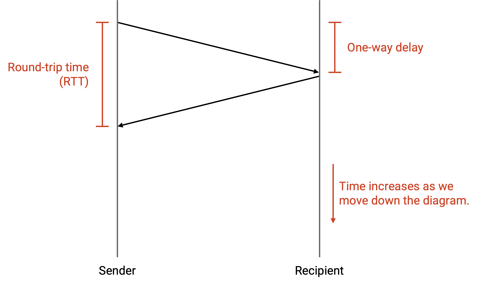
Let’s build intuition by designing a simplified protocol for reliably sending a single packet.
The sender tries to send a packet. How does the sender know if the packet was successfully received?
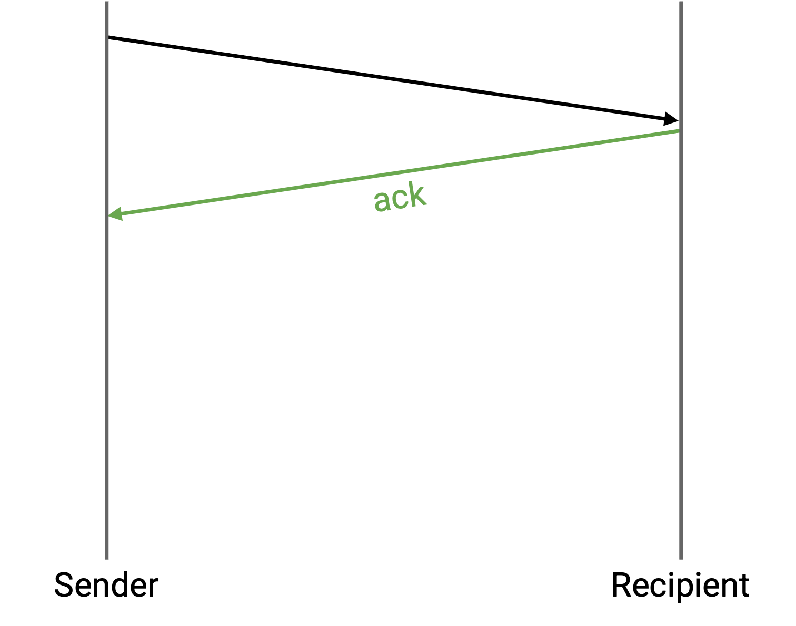
The receiver can send an acknowledgment (ack) message, confirming that the packet was received.
What happens if the packet gets dropped?
We can re-send the packet if it’s dropped. How do we know when to re-send the packet?
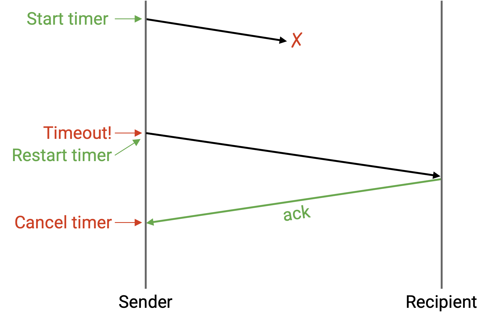
The sender can maintain a timer. When the timer expires, we can re-send the packet.
When the sender receives an ack, the sender can cancel the timer and does not need to re-send the packet.
What happens if the ack is dropped?
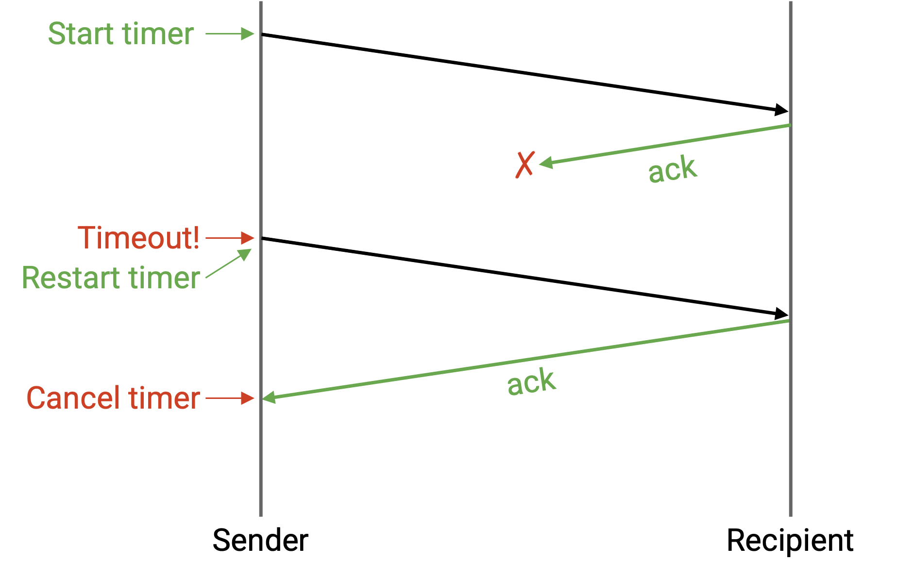
The protocol still works without modification. The sender will time out (no ack received) and re-send the packet until the ack is successfully sent. In this case, the destination received two copies of the same packet, but that’s okay. The destination can notice the duplicate and discard it.
How should the timer be set? If the timer is too long, the packet might take longer than needed to be sent. If the timer is too short, the packet might be re-sent when it didn’t need to be. Getting the timer wrong can affect our efficiency goals.
A good timer length would be the round-trip time. This is when the sender expects to receive the ack, so if an ack hasn’t arrived by then, the sender should re-send the packet at that time.
In practice, estimating RTT can be difficult. RTTs can vary depending on what path the packet takes through the network, and even along a specific path, the RTT can be affected by the load and congestion along that path.
One way to estimate RTT is to measure the time between sending a packet and receiving an ack for that packet. We can get an estimated RTT measurement from every packet sent, and apply some algorithm (e.g. exponential moving average) to combine these measurements into one RTT estimate. Our algorithm would also have to account for messages being re-sent (variance in the measurements).
In practice, operators usually err on the side of setting the timer to be longer. If the timer is too short, and timeouts are constantly happening, your connection is probably behaving poorly (constantly re-sending packets).
What if the bits are corrupted?
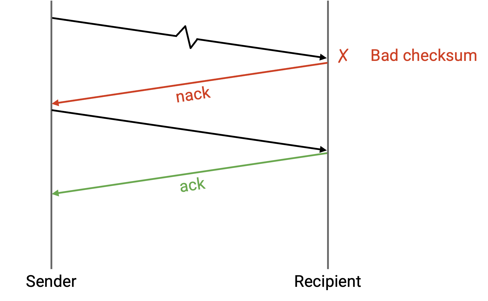
We can add a checksum in the transport layer header (different from the IP layer checksum). When the receiver sees a corrupt packet, it can do two things: Either the receiver can explicitly re-send a negative acknowledgement (nack), telling the sender to re-send the packet.
Or, the receiver can drop the corrupt packet and do nothing (don’t send an ack or nack). Then, the sender will time out and re-send the packet.
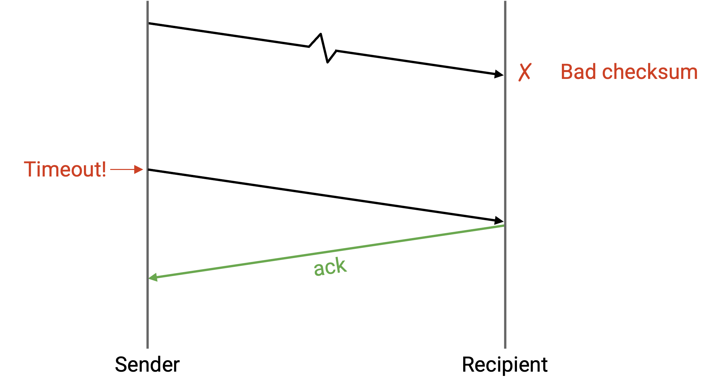
Both approaches (nack or wait for timeout) work, though TCP uses the latter (wait for timeout) and does not implement nacks.
What if the packets are delayed?
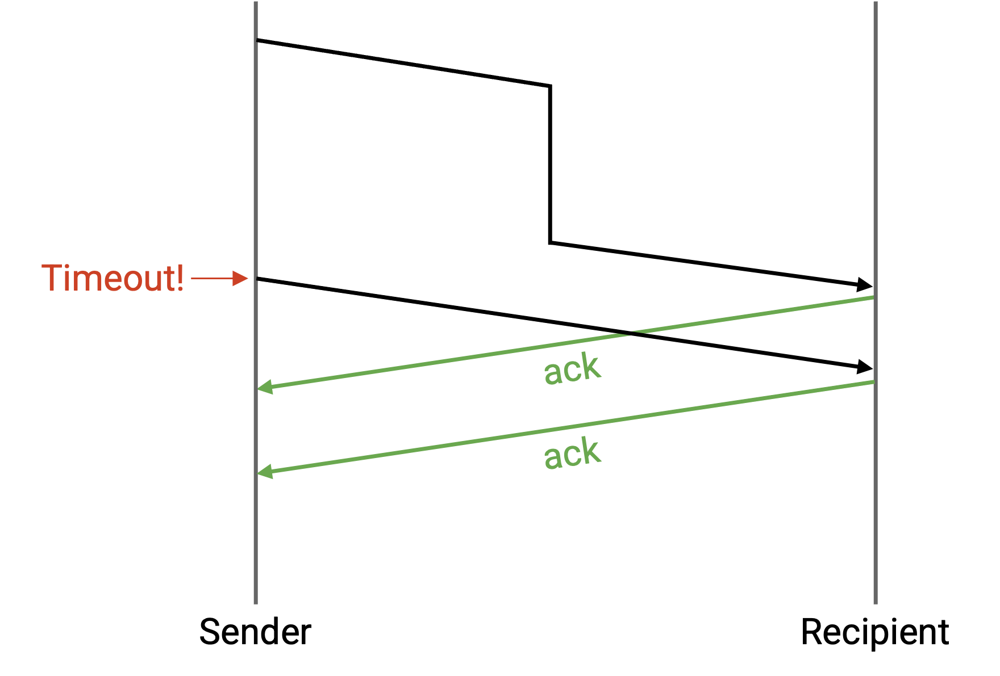
No modifications are needed. If the delay is very long, the sender might time out before the ack arrives. The sender will re-send the packet (so the recipient might get two duplicates), and the sender might get two acks, but that’s okay.
What if the sender sends one packet, but it’s duplicated in the network, and the recipient receives two copies?
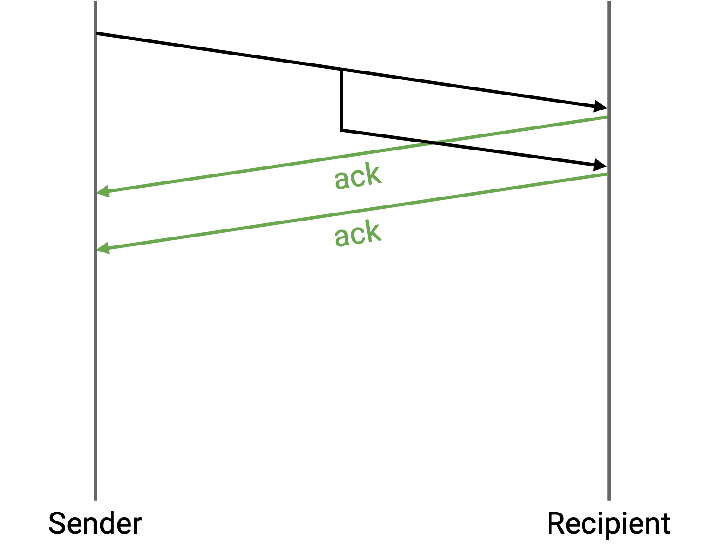
No modifications are needed. The recipient would send two acks, but both the sender and the recipient can safely handle duplicates.
Note: From this simplified protocol, we can see that sometimes the recipient receives two copies of the packet. If a specific link was implementing a reliability protocol, the recipient side of the link might receive two copies. Normally, the duplicate would get dropped and only one packet would be forwarded to the destination. But, if the router crashes and restarts in between the two copies arriving, the router might forward both copies to the destination.
In summary, the single-packet reliability protocol is:
If you are the sender: Send the packet, and set a timer. If no ack arrives before the timer goes off, re-send the packet and reset the timer. Stop and cancel the timer when the ack arrives.
If you are the recipient: If you receive the uncorrupted packet, send an ack. (You might send multiple acks if you receive the packet multiple times.)
The core ideas in this example will apply to later protocols as well: checksums (for corruption), acknowledgements, re-sending packets, and timeouts.
Note that this protocol guarantees at-least-once delivery, since duplicates may exist.
Reliably Delivering Multiple Packets
How would this protocol be extended to multiple packets?
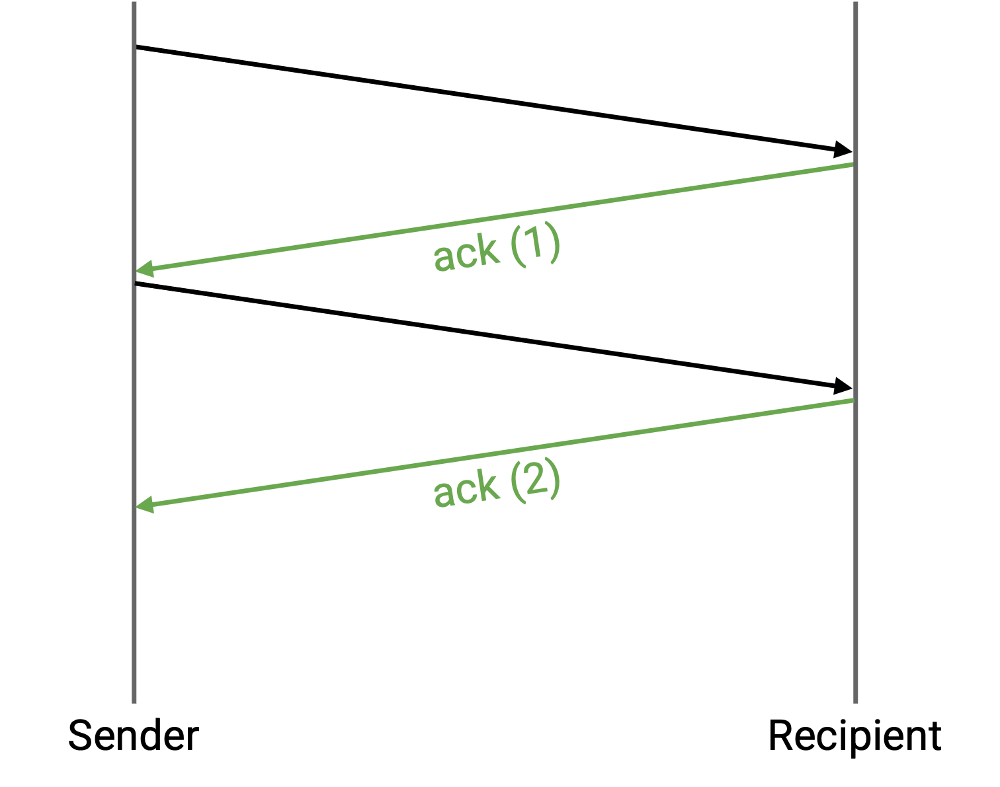
We could follow the same transmission rules (re-send when timer expires) for every single packet. To distinguish packets, we can attach a unique sequence number to every packet. Each ack will be related to a specific packet. Sequence numbers can also help us reorder packets if they arrive out of order.
When does the sender send each packet? The simplest approach is the stop and wait protocol, where the sender waits for packet i to be acknowledged before sending packet i+1. This will correctly provide reliability, but it is very slow. Each packet takes at least one RTT to be sent (more if a packet is dropped or corrupted).
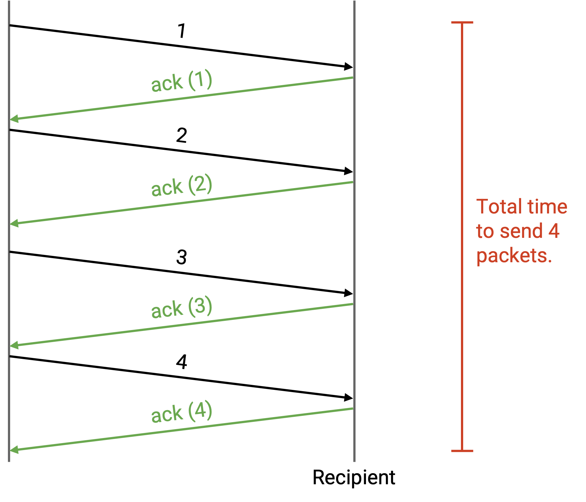
This protocol might work in smaller settings where efficiency is less of a concern, but this is too slow for the Internet. How can we make this faster?
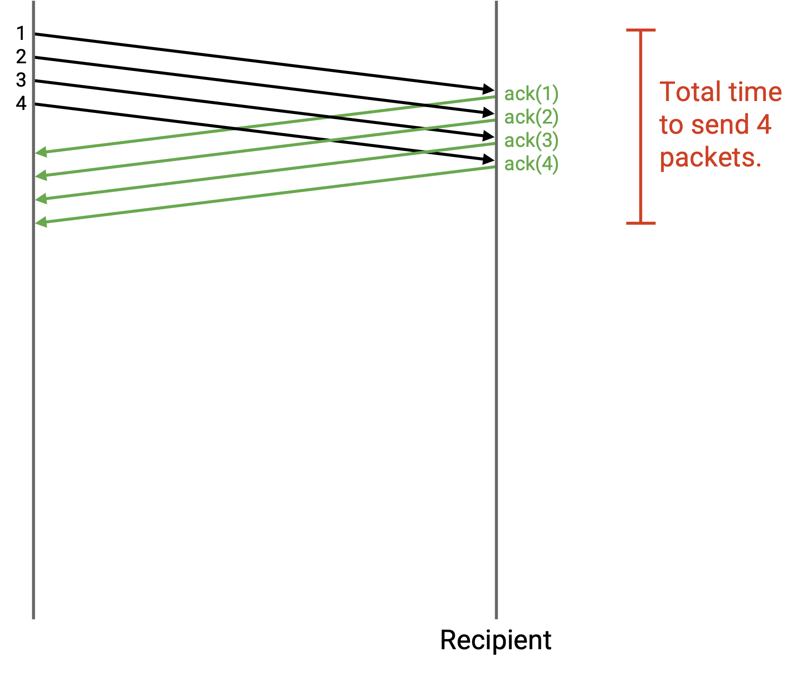
We can send packets in parallel. More specifically, we can send more packets while waiting for acks to arrive. When a packet is sent, but its corresponding ack has not been received, we call that packet in flight.
The simplest approach would be to send all packets immediately, but this could overwhelm the network (e.g. the link to your computer might have a limited bandwidth).
Window-Based Algorithms
Sending packets one at a time is too slow, but sending all packets at once overwhelms the network. To account for this, we will set a limit W and say that only W packets can be in flight at any given time. This is the key idea behind window-based protocols, where W is the size of the window.
If W is the maximum number of in-flight packets, then the sender can start by sending W packets. When an ack arrives, we send the next packet in line.
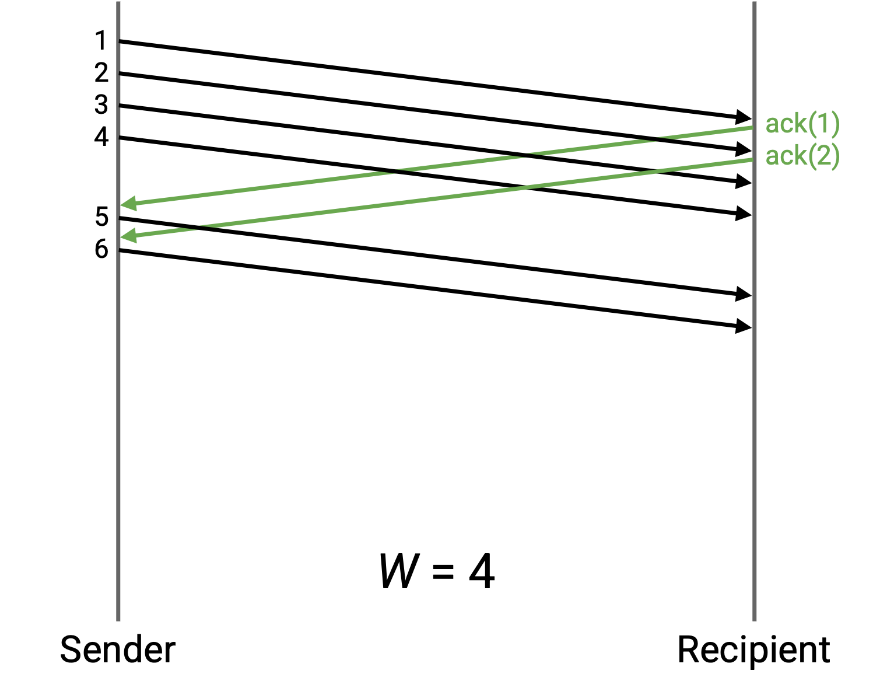
How should W be selected?
We want to fully use our available network capacity (“fill the pipe”). If W is too low, we are not using all of the bandwidth available to us.
However, we don’t want to overload links, since other people may be using that link (congestion control). We also don’t want to overload the receiver, who needs to receive and process all the packets from the sender (flow control).
Window Size: Filling the Pipe
Let’s focus on just the first RTT, from the time the first packet is sent, to the time the first ack arrives. Suppose this time is 5 seconds (not a realistic number, just for example). Also, suppose that the outgoing link allows the sender to send 10 packets per second (also not a realistic number). In total, during this first RTT time, the sender should be able to send 50 packets in total. Therefore, 50 would be a reasonable window size, so that the sender is always sending packets and never sitting idle.
If we set W to be lower than 50, then the sender would finish sending all the initial packets before the first ack arrives. Then, the sender would be forced to sit idling while waiting for acks to arrive, and some network bandwidth would be wasted. More generally, we want the sender to be sending packets during the entire RTT.
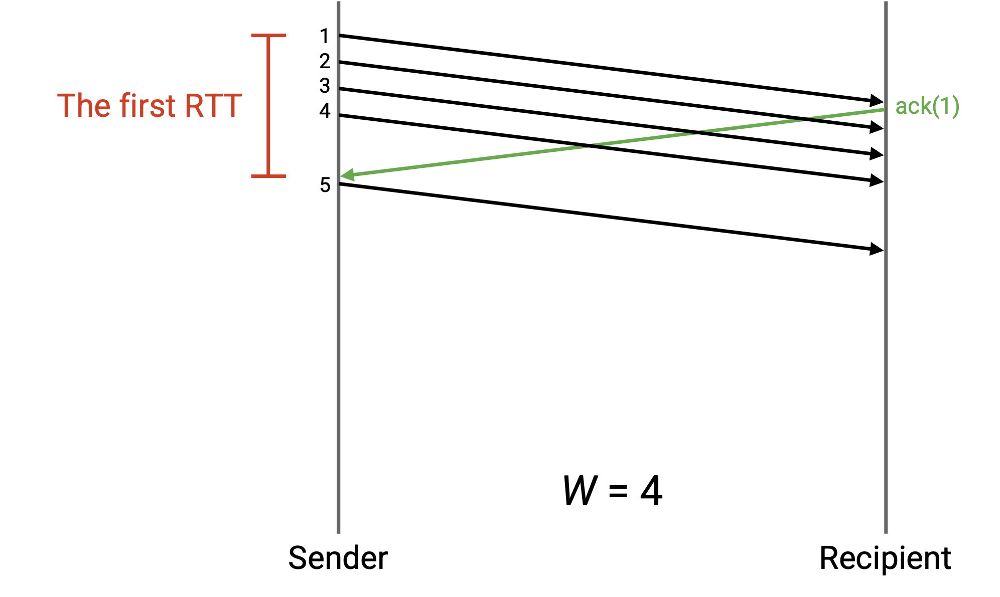
In this example, W is 4. But, after sending 4 packets, the sender is idling and wasting bandwidth while waiting for the first ack to arrive.
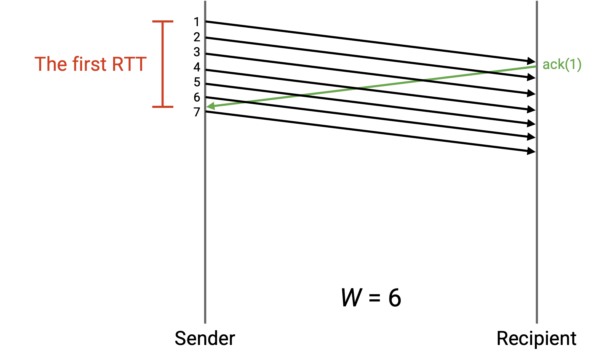
In this example, W is increased so that the sender is constantly sending packets. As the first ack arrives, the sender is just about to reach the limit of W packets in flight, and is able to immediately continue sending packets as more acks arrive.
The route to the destination might have multiple links, with different capacities. Let B be the minimum (bottleneck) link bandwidth along the path. We shouldn’t send packets faster than B, to avoid overloading the link. We also don’t want to send packets any slower than B (i.e. we want to be using the rate B at all times).
Also, suppose that R is the round-trip time between sender and recipient. We can multiply R times B to get the total number of packets that can be sent during the RTT. (We can send B packets per second, for R seconds.) This tells us the window size, in packets.
In reality, B is measured in bits per second, not in packets per second. When we multiply R times B, we get the number of bits that can be sent during the RTT. (B bits per second, for R seconds.) This tells us the window size, in bytes. In total, we can write:
W times packet size = R times B
The left-hand-side tells us the number of bytes sent during the window (W packets, times number of bytes per packet), and the right-hand-side tells us the number of bytes that can be sent during the RTT.
For a concrete example, we can set RTT = 1 second, and B = 8 Mbits/second. Then, R times B is 8 Mbits, or 1 megabyte, or 1,000,000 bytes.
If our packet size is 100 bytes, then we want W = 10,000 packets, so that we are fully using the bandwidth and sending 1,000,000 bytes during the RTT.
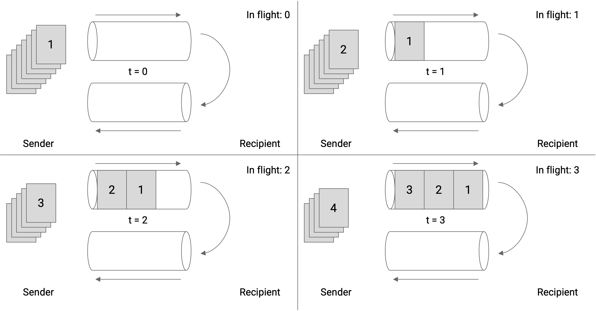
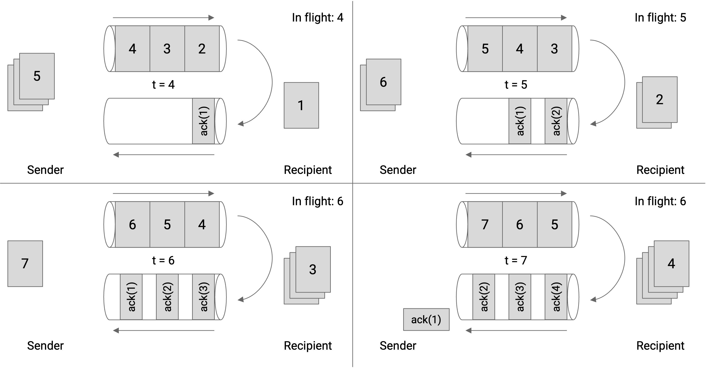
We can also draw the window size in terms of the link itself. In this picture, we are showing the outgoing and incoming directions of a specific link. As the sender pushes packets through the link at maximum capacity, the first ack will arrive immediately after the 6th packet is sent. Therefore, our window size should be 6.
Note that the window size is not 3. When packet 6 is sent, 3 packets are being sent, but there are 3 more packets whose acks have not arrived, so there are a total of 6 packets in flight.
If we set the window size to 3, the outgoing pipe would have been unused while the acks for 1, 2, 3 are in flight.
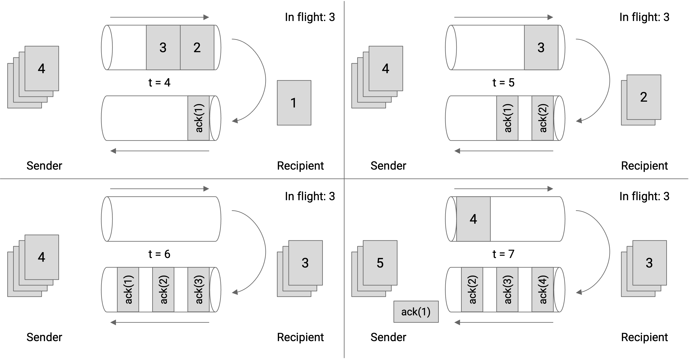
Note that the acks don’t fill up the entire incoming pipe because the packets don’t contain any actual data besides acknowledging receipt of a packet.
Window Size: Flow Control
Consider the transport layer protocol in the recipient’s operating system. The recipient might receive packets out-of-order, but the bytestream abstraction requires that packets are delivered in-order. This means that the transport layer implementation must hold on to the out-of-order packets by buffering them (keeping them in memory) until it’s their turn to be delivered.
For example, suppose the recipient has received and processed packets 1 and 2. Then, the recipient sees packets 4 and 5. The transport layer implementation cannot deliver 4 and 5 to the application yet. Instead, we have to wait for packet 3 to arrive, and in the meantime, we have to keep packets 4 and 5 stored in the transport layer implementation’s memory.
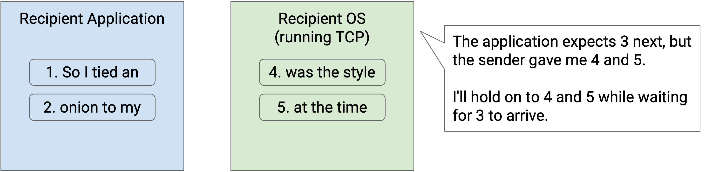
However, memory is not unlimited, and the recipient’s buffer size for storing out-of-order packets is finite. The recipient has to store every out-of-order packet in memory until the missing packets in between arrive. If the connection has a lot of packet loss and reordering, the recipient might run out of memory.
Flow control ensures that the recipient’s buffer does not run out of memory. To achieve this, we have the recipient tell the sender how much space is left in the buffer. The amount of space left in the recipient buffer is called the advertised window. In the acknowledgment, the recipient says “I have received these packets, and I have X bytes of space left to hold packets.”
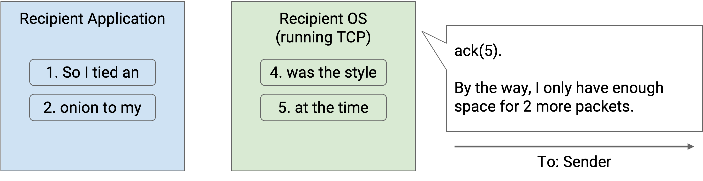
When the sender learns about the advertised window, the sender adjusts its window accordingly. Specifically, the number of packets in flight cannot exceed the recipient’s advertised window. If the recipient says “my buffer has enough space for 5 packets,” the sender must set the window to be at most 5 packets (even if the bandwidth might allow for more packets to be in flight).
Window Size: Congestion Control
Recall that in order to make the most use of bandwidth, the sender sets the window size to fully consume the bottleneck link bandwidth. For example, if the bottleneck link has bandwidth of 1Gbps, we will set the window size such that the sender is constantly sending data at 1Gbps for the entirety of the RTT (no idling).
In practice, it’s unlikely that the 1Gbps link is only being used by a single connection. Other connections could also be using the capacity along that link. Instead of consuming the entire bandwidth on that link, the sender should only consume its own share of that bandwidth capacity.
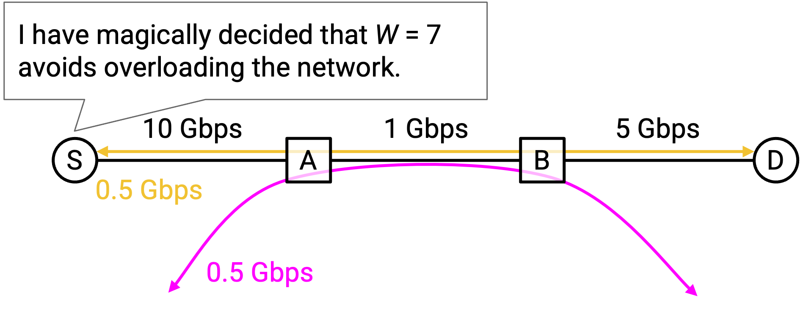
But, what share of the bandwidth goes to each connection?
Suppose we had two connections using 400MBps and 250MBps, respectively. If another connection then tries to use that same link, maybe the sender’s share is the remaining 350MBps. But another argument is that the bandwidth is not being shared fairly, so perhaps everybody should adjust to use 333MBps.
Determining and computing the exact amount of bandwidth that each connection gets to use is the goal of congestion control. Algorithms for congestion control are its own entire topic (covered in the next section). For now, we’ll abstract away congestion control and say that as part of the transport layer, the sender is implementing a congestion control algorithm, whose job is to dynamically compute the sender’s share of the bottleneck link on the connection.
The result of running the algorithm is the sender’s congestion window (cwnd). For now, all you need to know is that the algorithm outputs this number, which represents a bandwidth that maximizes performance, without overloading a link, while fairly sharing bandwidth with other connections.
We now know how to set the window to achieve our three goals from earlier. To fully utilize network capacity, we will set the window size according to the RTT and the bottleneck link bandwidth.
To avoid overloading the receiver, we will limit the window size according to the recipient’s advertised window. To avoid overloading links, we will limit the window size according to the sender’s congestion window (some number outputted by the sender running a congestion control algorithm).
In order to meet all three goals, we’ll set the window size to the minimum of all three values. In practice, note that the congestion window (third goal) is always less than or equal to the window size from fully using bandwidth (first goal). If there’s no congestion, we’d be fully using all of the bottleneck bandwidth, so the two numbers would be equal. In most cases, congestion will force us to use less than all of the bottleneck bandwidth, so the third number would be less than the first number. There is no case where the congestion window bandwidth would be greater than the bottleneck bandwidth.
Also, in practice, it’s difficult to discover the bottleneck bandwidth. The sender would have to somehow traverse the network topology and learn about each link’s bandwidth. Because the first number is hard to learn, and is always greater than or equal to the third number, we can set our window size to the minimum of the latter two numbers (ignoring the first number). The window size is the minimum of the sender’s congestion window, and the receiver’s advertised window.
Smarter Acknowledgments
So far, every ack packet corresponds to a single packet. Can we do better than acknowledging one packet at a time? What are some issues with acknowledging one packet at a time?
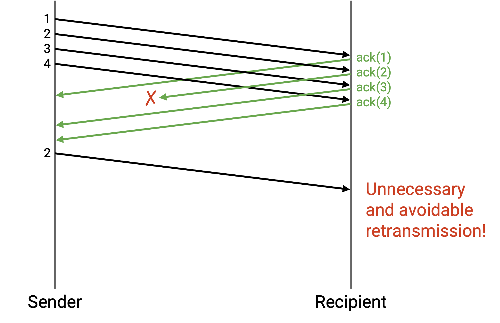
In this example, one of the acks is dropped, even though the recipient successfully received all 4 packets. This would force the sender to re-send packet 2, even though this re-sending was unnecessary.
Instead of sending an acknowledgement for a specific packet, each time we send an acknowledgement, we can actually list every packet we have received. This is called a full information ack.
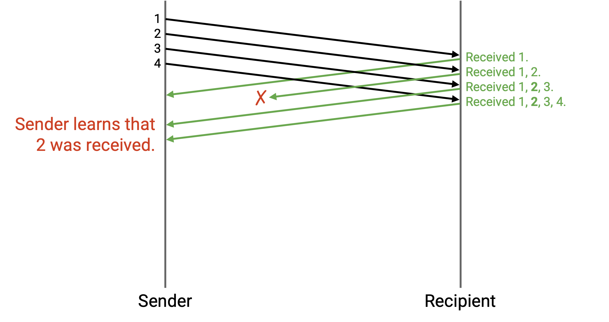
In this example, the acks now say: “I received 1,” and “I received 1 and 2”, and “I received 1, 2, 3”, and “I received 1, 2, 3, 4.”
Even though the second ack was dropped, the third and fourth acks help the sender confirm that packet 2 was received, and packet 2 no longer needs to be re-sent.
As more packets are sent, the list of all packets received is going to get very long. Full information acks can abbreviate this information by saying: “I have received all packets up to #12. Also, I received #14 and #15.” Formally, we give the highest cumulative ack (all packets less than or equal to this number have been received), plus a list of any additional packets received.
Even with this abbreviation, full information acks can get long. For example, if all even-numbered packets are dropped, then the highest cumulative ack will always be 1 (we can only say all packets up to 1 have been received, since 2 is dropped). The rest of the received packets will have to be in a list like [1, 3, 5, 7, 9, …] which can get very long.
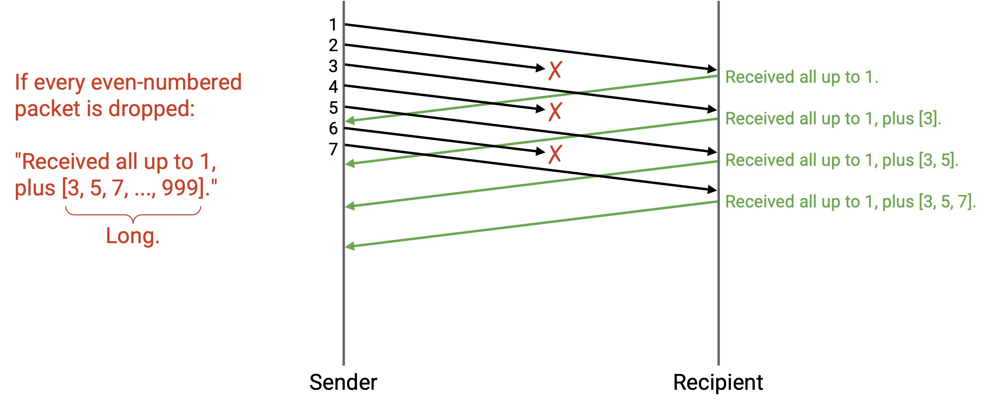
A compromise between individual acks (every ack drop forces re-sending) and full information acks (acks can get long) is cumulative acks, where we provide only the highest cumulative ack, and discard the additional list. Formally, the ack encodes the highest sequence number for which all previous packets have been received.
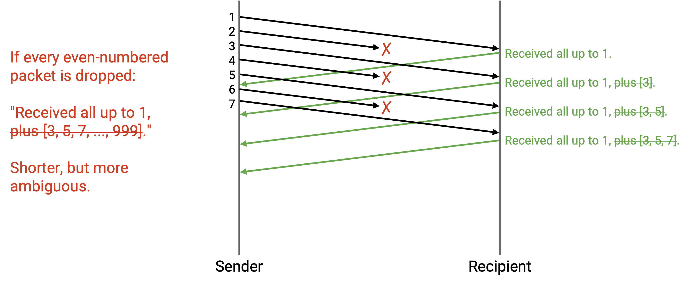
In this example, where even-numbered packets are dropped, every cumulative ack would say: “I received all packets up to and including 1.” Even though 3 and 5 were received, the cumulative ack will not encode this information, because it only confirms receipts of consecutive packets starting from 1.
Cumulative acks no longer have scaling issues (we’re always sending one number, not a list of numbers). However, they can be more ambiguous, as in the case above. The sender sees three acknowledgements all saying “I received everything up to and including 1,” and can deduce that 3 packets were received (packet 1, and two other packets), but cannot deduce what those other two packets are.
Detecting Loss Early
Can we do better than waiting for timeouts, and use other information that we receive to detect loss earlier and re-send packets sooner? For example, in our individual ack model, if we receive acks for packets 1, 3, 4, 5, 6, we might deduce that packet 2 is lost and re-send it, even before packet 2’s timer expires.
More formally, we can set a value K (not related to the window), and say that if K subsequent packets are acked after the missing packet, we’ll consider the packet lost (even if the timer hasn’t expired). For example, if K=3, we’re waiting on packet 5’s ack, and we get acks for 6, 7, and 8, then we can consider packet 5 lost.
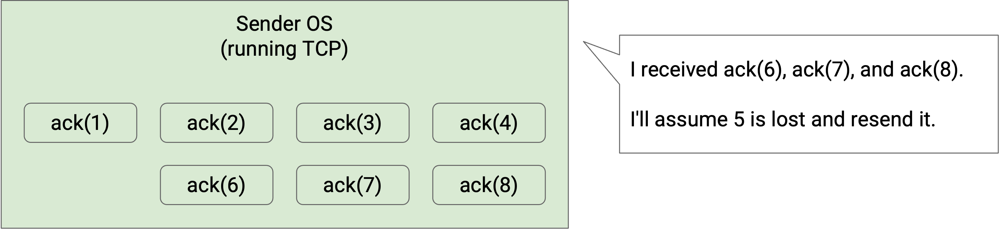
In practice, detecting loss from subsequent acks is much faster than waiting for a timeout. If our timeout is calculated from the RTT, it could be on the order of seconds. On the other hand, modern bandwidths can allow for acks to arrive once every few microseconds.
This strategy for detecting loss looks different depending on our strategy for sending acks. The above examples assume that we’re sending individual acks, but what about the other two ack models?
If we use full-information acks, the strategy is pretty similar, and the acks will actually show the missing packet more clearly.
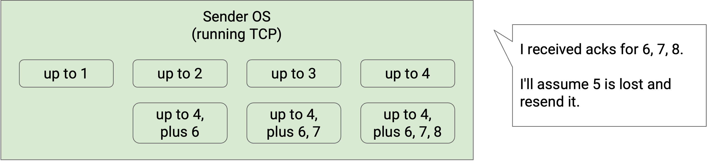
If packet 5 is lost, the acks might say “up to 4”, then “up to 4, plus 6”, then “up to 4, plus 6, 7”, then “up to 4, plus 6, 7, 8.” At this point, if K=3, then K packets after 5 have been acked, so we can declare that packet 5 is lost.
If we use cumulative acks, this strategy can be more ambiguous. If packet 5 is lost, then the acks might say “up to 4” (acking 4), “up to 4” (acking 6), “up to 4” (acking 7), “up to 4” (acking 8). The sender is seeing duplicate acks because of the gap in consecutive packets. If K=3, then we can declare packet 5 lost after receiving 3 duplicate packets (corresponding to 3 more packets acked after the gap), for a total of 4 duplicates.
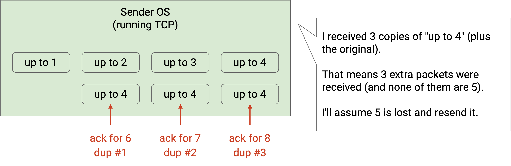
When we had individual and full-information acks, we could clearly see which packet needed to be re-sent. There was one packet missing the ack (and K subesquent acks arriving). However, the decision for which packet to re-send is more ambiguous with cumulative acks, especially when multiple packets are lost.
As an example, consider a sender with window size W=6, and K=3. So far, packets 1 and 2 have been acked, and packets 3-8 are in flight. Suppose packets 3 and 5 have been dropped. Let’s first walk through this example with individual ACKs.
4 arrives, and the recipient sends an ack for 4. The sender can now send 9.
6 arrives, and the recipient sends an ack for 6. The sender can now send 10.
7 arrives, and the recipient sends an ack for 7. The sender can now send 11.
At this point, the sender notices that K=3 packets after packet 3 (namely 4, 6, and 7) have been acked. The sender can declare 3 lost, and re-send 3 as well.
Note that even though the sender re-sent 3 and sent 11 as a response to the ack for 7, there are still a total of 6 packets in flight with this re-sending, so the window is not violated. This is because 3 was already one of the in-flight packets when we re-sent it.
8 arrives, and the recipient sends an ack for 8. The sender can now send 12.
Also, the sender notices that K=3 packets after packet 5 (namely 6, 7, and 8) have been acked, so the sender can re-send 5 as well.
9 arrives, and the recipient sends an ack for 9. The sender can now send 13.
Now, let’s redo this example with cumulative ACKs.
4 arrives, and the recipient sends an ack for 4, which says “ack everything up to 2.” At this point, the sender knows a packet must have arrived, but does not know that it’s 4. Still, the sender can send 9 next. Note that the window is not violated, because even though the sender seemingly has 7 un-acked packets, one of them did get acked by the duplicate “ack everything up to 2,” so there are only 6 packets in flight.
6 arrives, and the recipient sends an ack for 6, which still says “ack everything up to 2.” Again, the sender deduces that another packet arrived, and can send 10 next.
7 arrives, and the recipient sends an ack for 7, which still says “ack everything up to 2.” The sender deduces that another packet arrived, and can send 10.
At this point, the sender notices that “ack everything up to 2” has arrived 3 duplicate times (in addition to the initial ack for 2). The next un-acked packet is 3, so the sender will re-send 3.
This is when things get ambiguous. When 8, 9, and 10 arrive at the recipient, the sender will receive three more copies of “ack everything up to 2.” (We’re assuming the recipient hasn’t received 3 yet, since it was re-sent after 9 and 10).
The sender can now send 12, 13, and 14, since three more acks have arrived, but which packet should be re-sent next? Should the sender re-send 3, 4, 5, or something else?
This example shows that cumulative acks don’t always indicate exactly which packets were received. However, the number of acks (possibly including duplicates) can be used to determine how many packets were received (without knowing exactly which packets were received), which allows us to keep sending according to the window size. However, ambiguity arises when we receive too many duplicate acks and cannot tell which packet to re-send.